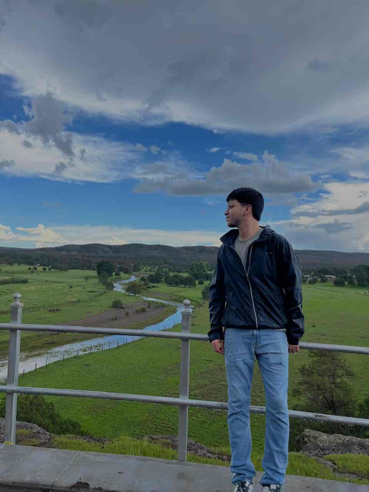

Efren Gamez | WDD 130
About Me
Hello everyone, my name is Efren Gamez, from Los Mochis, Sinaloa. I really enjoy playing soccer. Sometimes I think I have the gift of playing the piano, so I'm grateful for that. I'm currently pursuing my first degree in Software Development at BYU-I and I'm very excited to continue learning how to program.
